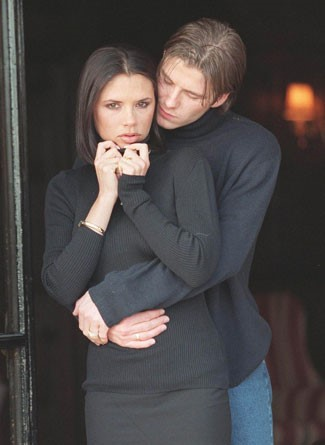
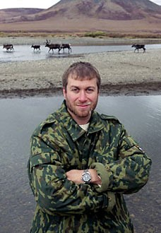

Chương 32-33

hận thức rõ nếu không tăng cường sức mạnh hàng thủ, sẽ không thể nào giành lại ngôi cao, Sir Alex tiếp tục phá kỷ lục chuyển nhượng Anh Quốc, tậu trung vệ Rio Ferdinand từ Leeds United với giá 30 triệu bảng[1]. Bên cạnh đó, Sir mời được Carlos Queiroz vào ghế trợ lý. Khác với McClaren, trước khi đến Old Trafford, Queiroz đã nổi tiếng toàn cầu. Nhiều người ngạc nhiên, không hiểu tại sao một chuyên gia từng lãnh trách nhiệm HLV trưởng cho Sporting Lisbon và đội tuyển Bồ Đào Nha lại chấp nhận đi làm chức phó. Thật sự chẳng có gì khó hiểu; Queiroz suy nghĩ giống Sir Alex khi nhận lời giúp việc cho Jock Stein: Chịu hạ mình một chút mà được học hỏi với một bậc “đại danh sư”, chẳng cũng đáng hay sao? “Suốt 17 năm tôi đã quen làm sếp”, Queiroz chia sẻ, “song khi Sir Alex ngỏ lời mời, tôi nhận ngay không chút đắn đo. Được làm việc cùng ngài là một cơ hội không ai muốn bỏ lỡ.”
Giống hệt mùa trước, mùa 2002-2003 khởi đầu với một vụ xì căng đan hồi ký, lần này là hồi ký Roy Keane. Độc giả có nhớ nơi chương 25, ta từng đề cập việc Roy Keane bị chấn thương nặng năm 1997, khi truy cản Alfie Haaland của Leeds? Xin được nói thêm: Lúc ấy, khi Keane đang đau đớn lăn lộn trên sân, Haaland cho là tiền vệ người Ireland giả vờ, bèn cúi xuống, mắng sa sả vào mặt anh. Tưởng đâu theo thời gian, mọi việc cũng thôi, chẳng ngờ Keane tuy không phải người Tàu, mà thuộc lòng câu “quân tử báo thù, thập niên bất vãn”. Năm tháng trôi qua, Haaland đã chuyển từ Leeds sang Manchester City, Keane vẫn đau đáu đợi cơ hội trả đũa. Đến năm 2001, anh báo oán thành công, với cú đạp cực kỳ thô bạo vào đầu gối Haaland[2]. Lúc ấy, mọi người đều nghĩ đó chỉ là pha phạm lỗi vô ý. Giờ đây, trong hồi ký, Keane mới “lạy ông tôi ở bụi này”, tiết lộ mình cố tình gây chấn thương cho đối phương. Anh liền bị LĐBĐ phạt 150 000 bảng, kèm án treo giò năm trận. Nhân thể đang bị đau hông, Keane tận dụng luôn dịp này, vào bệnh viện giải phẫu rồi nghỉ dưỡng đến cuối năm.
Vắng Keane, lại vắng cả Gary Neville, David Beckham và Nicky Butt vì chấn thương, United bị Arsenal và Liverpool bỏ xa trên bảng xếp hạng. Hàng thủ Quỷ Đỏ vẫn chưa thật sự chắc chắn: Rio Ferdinand là trung vệ xuất sắc, nhưng anh cần một người đá cặp nhanh nhẹn hơn Laurent Blanc, và một thủ môn đáng tin cậy ở đằng sau. Trong khi đó, hàng công lại không bùng nổ, do Nistelrooy ghi ít bàn hơn. Trước những đội yếu như Sunderland, Fulham, West Ham, các học trò Sir Alex chơi rất thiếu sức sống. Họ lại càng bạc nhược khi để thua Manchester City 1-3 (lần đầu tiên City thắng đối thủ cùng thành phố, kể từ chiến tích 5-1 năm 1989). Cố nhiên, sau trận đấu, đội bị ông thầy “sấy” cho thê thảm. “Chưa bao giờ tôi thấy thầy giận như thế”, Gary Neville kể lại.
Từ trên đỉnh cao, thình lình Manchester United đứng trước nguy cơ trắng tay năm thứ hai liên tiếp, điều chưa từng xảy ra từ 1990. Báo chí bắt đầu đăng những hàng tít như “Đế chế Đỏ đang lung lay”, cựu tiền đạo United Stuart Pearson thậm chí lên MUTV đòi Sir Alex bán Veron và Blanc. Trước giờ, Sir Alex chỉ “cấm vận” người ngoài, lần này ông nổi điên, cấm luôn MUTV một tuần liền. Giữa cảnh nước sôi lửa bỏng, Sir còn gặp vấn đề cá nhân: Trong chuyến đi ngắn ngày tới Nam Phi, ông bị một phụ nữ địa phương tố cáo tội sàm sỡ. Sau khi điều tra rõ ràng, tòa nhận định nguyên cáo chỉ dựng chuyện, trả lại danh dự cho Sir.
Những dấu hiệu khả quan xuất hiện từ cuối tháng mười một. Van Nistelrooy chấm dứt cơn hạn bàn thắng, Scholes bắt đầu quen với vai trò hộ công và nhả đạn thường xuyên. Chơi thay các trụ cột chấn thương, một số cầu thủ dự bị cũng thể hiện phong độ rất tốt. Thay vì đá dưới hàng thủ, Phil Neville gây ấn tượng trong vai tiền vệ. John O’Shea thì hết sức đá năng, mỗi trận mỗi vị trí, trung vệ hay hậu vệ cánh, tiền vệ trụ hay tiền vệ biên đều đá tròn vai. Cùng Wes Brown và Darren Fletcher, O’Shea là sản phẩm “cây nhà lá vườn” thành công nhất kể từ thế hệ vàng.
Ngày 23 tháng 11, United thắng Newcastle 5-3, với một hattrick của Nistelrooy. Một tuần sau, họ hạ Liverpool 2-1. Ghi cả hai bàn, Diego Forlan từ chỗ không biết lập công bỗng chốc biến ra người hùng. Trận kế tiếp, đến lượt Veron và Scholes nổ súng, buộc Arsenal phơi áo 2-0. Đầu năm mới 2003, với sự trở lại của Keane và Beckham, United vươn lên thứ hai, chính thức trở lại đường đua.
Giữa lúc mọi việc đang ngon trớn, lại có sự cố xảy ra. Các báo lá cải cùng lúc đăng tít “Fergie xử Becks”. Chả là sau trận thua Arsenal ở vòng năm Cúp FA, Sir Alex chỉ trích Beckham vì đã phạm lỗi dẫn đến bàn thua cho đội nhà. Trong lúc giận dữ, Sir đá chiếc giày đi sượt mắt Beckham, làm anh chảy máu, phải khâu mấy mũi. Nếu nạn nhân là người khác, vụ này chắc không quá rùm beng, nhưng đây lại là David Beckham, cầu thủ nổi tiếng nhất hành tinh. Giới truyền thông đổ xô phân tích chuyện “chiếc giày bay”, và cùng đi đến kết luận: thầy trò Becks đã không còn đội trời chung. Họ cũng có phần đúng, song “chiếc giày bay” thật ra chỉ là phần nổi của vấn đề, có hay không có nó, Beckham cũng sẽ ra đi. Tuy thế, trước khi mùa giải kết thúc, hai thầy trò đều giữ thái độ rất chuyên nghiệp. “Chúng tôi vẫn hòa thuận với nhau”, Beckham nói, “Trong phòng thay đồ không tránh khỏi đôi khi có chuyện này chuyện kia. Đều đã là quá khứ cả rồi”. Sir Alex thì tỏ ra hài hước: “Chỉ là không may thôi. Tôi đá lại 100 lần cũng không trúng thêm lần nữa. Nếu nhắm được giỏi thế thì giờ này tôi vẫn ra sân chơi tiền đạo, đâu cần phải làm HLV”.
Tuy ầm ĩ trên mặt báo, vụ Beckham không gây ảnh hưởng đến phong độ của United. Sau thất bại trước Middlesbrough ngày 26 tháng 12, 2002, đội không thua thêm bất kỳ trận nào tại giải VĐQG. Arsenal, dù vậy, vẫn đứng đầu bảng, và HLV Arsene Wenger bắt đầu mơ về một cú ăn ba. Nhận định về giấc mộng của “giáo sư”, Sir Alex nói một câu đi vào lịch sử: “Chà, ăn ba cơ đấy! Nhưng nói thế thôi, tôi thừa biết đây là thời-điểm-đít-kêu-cọt-kẹt”
“Đít kêu cọt kẹt” ý là căng thẳng quá, đến độ ngồi không yên trên ghế, cứ nhấp nha nhấp nhổm, tạo ra những tiếng cọt kẹt. Từ này quá ấn tượng, nên từ người hâm mộ, nhà báo, đến các HLV đồng nghiệp, ai cũng lấy dùng theo. Đến nay, “thời điểm đít kêu cọt kẹt” đã trở nên một thành ngữ, được ghi nhận trong từ điển, chỉ về giai đoạn cuối cùng của mùa giải, khi cuộc đua giành chức vô địch bước vào hồi gay cấn nhất.
Trong lúc “đít kêu cọt kẹt”, đầu tháng tư,Quỷ Đỏ đè bẹp Newcastle 6-2 (Paul Scholes ghi ba bàn), đánh bật Pháo Thủ xuống hạng hai. Càng về cuối, Van Nistelrooy càng ghi bàn dữ dội, giúp bầy quỷ thắng như chẻ tre. Trong tám trận cuối cùng, “người Hà Lan bay” lập hai hattrick, ghi tổng cộng 13 bàn, cướp danh hiệu Vua Phá Lưới giải ngoại hạng ngay trước mũi Thierry Henry (25 bàn, hơn Henry một bàn)[3]. United thì rinh chức vô địch trước mũi Arsenal, hoàn tất màn ngược dòng ngoạn mục chẳng kém mùa 1995-1996.
Dù không đăng quang, United có màn trình diễn xuất sắc nhất tại Cúp C1 kể từ cú ăn ba. Tại vòng đấu bảng thứ nhất[4], họ vượt qua Bayer Leverkusen ở cả hai lượt trận, phục thù thành công thất bại năm ngoái. Vòng đấu bảng thứ hai, Quỷ Đỏ gây ấn tượng còn mạnh hơn, thắng Juventus 2-1 trên sân nhà, 3-0 trên sân khách. Vào đến tứ kết, đội gặp phải đương kim vô địch Real Madrid. CLB hoàng gia Tây Ban Nha lúc này đã trở thành một dải thiên hà chi chít những siêu sao thượng thặng: Ronaldo, Zidane, Figo, Carlos, Raul..., rõ ràng trên cơ so với đối thủ đến từ Anh. Lượt đi tại Bernabeu, Figo và Raul ghi bàn, giúp Real dẫn 3-0 chỉ trong hiệp một; Van Nistelrooy gỡ lại một bàn danh dự trong hiệp hai, duy trì hy vọng mong manh cho United.
Cuộc đấu lượt về tại Old Trafford được nhiều người ví với trận cầu huyền thoại giữa Real Madrid và Eintracht Frankfurt năm 1960. Người hâm mộ như ngồi trên tàu lượn siêu tốc, lúc vút cao lúc tụt thấp theo từng bàn thắng. Ronaldo mở tỷ số cho Real, Nistelrooy gỡ hòa, Ronaldo lại nhân đôi cách biệt, rồi Helguera phản lưới đưa trận đấu về thế cân bằng. Siêu tiền đạo Brazil hoàn tất hattrick vào phút 59, dồn United vào đường cùng. Cơ hội gần như không còn, song Quỷ Đỏ không vì thế mất đi tinh thần chiến đấu. Vào sân thay Veron, David Beckham lập cú đúp giúp chủ nhà giành thắng lợi chung cuộc 4-3. Bàn thứ nhất là một cú sút phạt thần sầu, khiến thủ thành Casillas chỉ biết đứng ngẩn ngơ, bàn thứ hai từ pha dứt điểm cận thành.
Trên khán đài Old Trafford hôm ấy có Roman Abramovich. Mê mẩn trước cái đẹp của túc cầu, tỷ phú người Nga quyết định đầu tư vào bóng đá, trở thành ông chủ Chelsea FC. Về phần United, dù bị loại, họ vẫn ngẩng cao đầu, vì là người chiến thắng trong trận cầu thuộc loại hấp dẫn nhất mọi thời. Sir Alex tự hào về tất cả học trò, ngoại trừ Fabien Barthez. Sir rất kiên nhẫn với thủ môn người Pháp, nhưng sáu bàn trong hai trận gặp Real là những giọt nước làm tràn ly. Từ đấy, Roy Carroll được đôn lên bắt chính, Barthez không còn cơ hội khoác áo Quỷ Đỏ thêm một lần nào.
Trong số những cầu thủ rời Old Trafford mùa hè 2003 có Laurent Blanc (giải nghệ) và Juan Veron (sang Chelsea, 15 triệu). Tuy thế, cái tên "hot" nhất hẳn phải là David Beckham. Sau những mâu thuẫn liên tục cùng Sir Alex, không ai tin anh sẽ ở lại United.
David Beckham chưa phải cầu thủ giỏi nhất mọi thời, điều ấy đã hiển nhiên. Song anh là người nổi tiếng và giàu có nhất. Không chỉ trong giới cầu thủ bóng đá, xét đến tất cả các vận động viên thể thao nói chung, cũng không ai được thần tượng hóa đến cuồng nhiệt như anh, không ai được nhắc đến hằng ngày trên mặt báo như anh. Mỗi lần anh thay đổi kiểu tóc, mỗi lần anh đi shopping, tất cả đều lànhững sự kiện thu hút sự chú ý… trên toàn cầu. Tại United, David Beckham trở thành một biểu tượng thể thao, cũng như một biểu tượng thương mại cực kỳ ăn khách trên khắp năm châu. Khuôn mặt điển trai hấp dẫn, hôn ước với cựu thành viên Spice Girls Victoria Adams, cùng lối sống rất xa hoa khiến anh đã lừng danh lại càng thêm nổi tiếng. Không đơn thuần là cầu thủ, Beckham là một siêu sao của showbiz.
Sir Alex chưa bao giờ ưa thích Victoria. Trong mắt Sir, cô là người đã làm hỏng Beckham. Từ một chàng trai ngây thơ, dễ thương, luôn hòa đồng cùng đồng đội, sau khi quen Posh Spice, anh rút vào vỏ bọc ngôi sao, dần dần trở nên khép kín, xa cách. Ngày thành hôn, Beckham xin thầy cho nghỉ trăng mật 10 ngày, thay vì một tuần, nhưng Sir nhất quyết từ chối. "Ngày xưa cưới xong, thầy phải ra sân ngay, một ngày trăng mật cũng không có", ông nói. Thái độ của ông đối với Victoria lúc nào cũng lạnh nhạt. "Suốt bốn năm tôi và Becks hẹn hò, ông ấy chẳng nói với tôi một câu nào, ngoài hai chữ: xin chào", Posh bức xúc.
Càng ngày, Sir Alex càng ngán ngẩm với những kiểu tóc tai, thời trang mà ông cho là "kinh dị" của Beckham. Ông càng không hài lòng việc anh bê trễ tập luyện, bỏ đi đóng quảng cáo hay xuất hiện trên các show truyền hình. Beckham như đứng giữa hai dòng nước. Một bên là người thầy anh luôn kính trọng từ thuở còn thơ, một bên là vợ yêu.Victoria liên tục rỉ tai,khuyên chồng rời Old Trafford đến với một CLB London: London là thủ đô hoa lệ, sống ở đấy không tốt hơn ở Manchester sao?
Ngay năm 2000, Sir Alex đã có ý định dùng Beckham để đổi Luis Figo. Barcelona ra giá Figo đến 37 triệu bảng, Sir chẳng đào đâu ra nổi số tiền ấy. Song giá trị Beckham cao hơn Figo, nếu đem anh đánh đổi, ông chẳng những không mất đồng nào, mà phía Barca còn phải trả thêm tiền cho United. Trên phương diện chuyên môn, United cũng hưởng lợi, vì Figo chỉ thua Beckham về danh tiếng, chứ chẳng hề kém về chuyên môn, nếu không nói là có phần hơn. Sir Alex đã có những cuộc tiếp xúc bí mật với Figo, tưởng chừng hai bên sắp đạt được thỏa thuận đến nơi. Nhưng rồi đến phút chót, Sir đổi ý, không muốn phá đi đội hình vừa giành cú ăn ba lịch sử. Figo cuối cùng đến Bernabeu.
Tuy vậy, việc Beckham ra đi chỉ là sớm hay muộn. Beckham vẫn tôn kính thầy, và Sir Alex vẫn thương học trò. Có điều, họ đã trở nên quá khác biệt, không thể cùng chung sống dưới mái nhà Old Trafford. Sự cố "chiếc giày bay" đóng vai trò xúc tác, đẩy Beckham khỏi đội sớm hơn dự kiến. Real Madrid đánh bại Barcelona trong cuộc đua giành chữ ký Becks. Ngày một tháng một 2003, chàng bạch mã hoàng tử thành Manchester chính thức đến Real, với giá chuyển nhượng 25 triệu bảng.
Sang Tây Ban Nha, rồi đến Mỹ, Beckham duy trì được vị thế ngôi sao lớn của showbiz. Nhưng nếu nhìn thuần túy về chuyên môn, anh chỉ còn là một bóng mờ. Thời đỉnh cao của cầu thủ David Beckham vĩnh viễn nằm tại Nhà Hát Những Giấc Mơ[5]. Trái tim anh cũng vậy. Năm 2007, khi phóng viên đặt câu hỏi: Nếu Manchester United mời chào mức lương cao hơn, liệu anh có ở lại, không sang Real Madrid? Beckham nghiêm mặt: Tôi sẵn sàng chơi cho United, dù không có một xu tiền lương!

Becks và Posh (ảnh: Pattayadailynews.com)
[1] Các đồng đội của Ferdinand ở ĐTQG Anh như Beckham, Scholes, Butt, và Brown góp công lớn trong việc thuyết phục anh rời Leeds. Ferdinand đồng ý đến Old Trafford sau chuyến đi nghỉ ở Las Vegas cùng Wes Brown.
[2] Có lời ngoa truyền rằng Haaland phải giải nghệ sau pha vào bóng của Keane. Điều này không đúng. Sau khi bị phạm lỗi, Haaland vẫn chơi tới hết trận. Anh chỉ nghỉ hưu vào năm 2003.
[3]Tính tất cả các giải, Nistelrooy ghi đến 44 bàn, chỉ kém hai bàn so với kỷ lục mọi thời đại của Denis Law. Xếp sau Nistelrooy là Scholes (20 bàn), Solskjaer (15) và Giggs (14).
[4]Trong vòng ba mùa từ 1999-2000 đến 2002-2003, Cúp C1 thay đổi thể thức: Trước khi vào tứ kết, các CLB phải trải qua hai vòng đấu bảng.
[5]Ngoài Beckham, Real Madrid còn mời Carlos Queiroz về làm HLV trưởng. Tuy nhiên, chỉ sau một mùa ở Bernabeu, Queiroz trở về làm việc dưới trướng Sir Alex. Trong thời gian Queiroz vắng mặt, Sir tạm nhờ Walter Smith, cấp phó cũ của mình ở ĐTQG Scotland.
Chương 33
Hai Năm Đời Lận Đận
Khoảng năm 2003, doanh nhân người Ireland Dermot Desmond và gia đình tài phiệt Mỹ Glazer mỗi bên nắm 1.5% cổ phần tại United PLC. John de Mol người Hà Lan và Harry Dobson người Scotland lần lượt giữ 4.1 và 6.5%. Cổ đông lớn thứ nhì là hãng truyền thông Sky, với 9.9%, còn lớn nhất là cặp đôi Magnier-McManus, 10.4%. Không như các fan hâm mộ kỳ vọng, Magnier và McManus chẳng những không cất nhắc Sir Alex, mà còn tính chuyện sa thải ông.
Nguyên do cũng chỉ vì con ngựa đua Rock of Gibraltar. Sau khi về hưu, The Rock lui về làm công tác…truyền giống. Ước tính mỗi năm, nó có thể giao phối với gần 300 con cái, đem về cho chủ đến sáu triệu bảng tiền phí. Là đồng chủ nhân, Sir Alex lẽ ra được hưởng 50% lợi nhuận, tức là ba triệu. Nhưng Magnier lại giở trò ăn gian, đề nghị trả cho Sir một lần bảy triệu bảng rồi thôi. Sir đương nhiên không đồng ý. Trung bình một ngựa đực có thể truyền giống trong 20 năm, ba triệu nhân 20 là 60 triệu, vậy mà Magnier chỉ trả bảy, ai có thể chấp nhận được? Thế là hai bên lôi nhau ra tòa.
Dù khôn ngoan đến đâu, Sir Alex cũng chỉ là một HLV, về mặt mánh khóe thủ đoạn không sao đọ nổi với tài phiệt. Vụ việc giằng co tại tòa chưa ngã ngũ, Magnier và McManus mua đứt cổ phần từ Sky, nâng sở hữu của mình lên 20.3%. Với thế lực mạnh hơn bao giờ hết, họ gây áp lực lớn lên BLĐ United. Sir Alex nhận được thông điệp rõ ràng: Nếu không quy hàng, “mất đầu” đừng trách! Người làm công mà dám kiện chủ, kết quả thế nào chẳng cần nói cũng biết. Không còn cách nào khác, Sir đành rút đơn kiện, chấp nhận thỏa thuận ngoài tòa cùng Magnier. Đã chiếm thế thượng phong, Magnier nuốt luôn lời hứa bảy triệu trước đây, chỉ trả cho Sir 2.5 triệu. Chẳng rõ việc này có phải một trong những nguyên nhân khiến ít lâu sau, Sir phải vào viện chữa bệnh về tim hay không.
Giữalúc Sir Alex bị tài phiệt Ireland “bóc lột”, tỷ phú Nga Abramovich đổ hàng núi tiền vào Chelsea, biến đội bóng thủ đô thành một thế lực đáng sợ. Với túi thần không đáy của Abramovich, chỉ nội mùa hè 2003, Chelsea chi tiêu vung vít, bỏ ra 121 triệu bảng mua về 12 cầu thủ mới. Giám đốc điều hành của United, Peter Kenyon, cũng nghe theo tiếng gọi đồng tiền, chạy sang Stamford Bridge. Thay thế Kenyon tại Old Trafford là David Gill.
Trong hai mùa 2003-2004 và 2004-2005, United cũng mua nhiều cầu thủ, đáng chú nhất là thủ môn Tim Howard, hậu vệ Gabriel Heinze, cặp tiền đạo Louis Saha – Alan Smith, và hai tài năng trẻ mới 18 tuổi: Cristiano Ronaldo và Waye Rooney[1].Vụ chuyển nhượng Ronaldo tốn đến 12.5 triệu bảng, làm nhiều người nghi ngờ: Liệu anh chàngmăng sữa này có xứng đáng cái giá đó không? Thiên hạ càng xôn xao khi Ronaldo được kế thừa chiếc áo số bảy của David Beckham. Cầu thủ chạy cánh người Bồ Đào Nha nhanh chóng dập tắt những hoài nghi, góp công lớn đưa United giành Cúp FA năm 2004. Anh ghi một bàn trong trận thắng Manchester City 4-2 ở vòng năm. Đến trận chung kết gặp Milwall, cũng anh mở tỷ số, trước khi Van Nistelrooy ghi thêm hai trái, đem về Old Trafford Cúp FA thứ 11 trong lịch sử.
Waye Rooney còn gây ấn tượng mạnh mẽ hơn. Mang trên lưng danh hiệu thần đồng nước Anh, cùng giá chuyển nhượng “khủng” 27 triệu bảng, anh phải đối đầu áp lực cực lớn. Vậy mà ngay trận ra mắt gặp Fenerbace tại Cúp C1, ngày 28 tháng 9, 2004, Rooney lập hattrick, và kiến tạo một bàn cho đồng đội, giúp Quỷ Đỏ hủy diệt đối phương 6-2. Một tháng sau, trong cuộc “đại chiến Old Trafford” với đương kim vô địch Arsenal, anh lại đóng vai người hùng: Kiếm được quả phạt đền cho Nistelrooy, rồi đích thân lập công ấn định tỷ số 2-0, cắt đứt chuỗi 49 trận bất bại của Pháo Thủ[2]. Mùa 2004-2005, Rooney là vua phá lưới của United với 17 bàn trên khắp các mặt trận: Một thành tích không tồi chút nào đối với một tân binh mới 18 tuổi. Danh hiệu Cầu Thủ Trẻ Xuất Sắc của PFA đương nhiên được trao về anh. Trong khi Solskjaer được gọi là “sát thủ mặt trẻ thơ”, Rooney chẳng khác nào một…trẻ thơ mặt sát thủ!
Dù vậy, cả Rooney lẫn Ronaldo đều chưa đạt đến đỉnh cao phong độ, không tỏa sáng được suốt mùa giải; United chưa thể dựa vào họ để tìm lại vinh quang trên đấu trường VĐQG và châu Âu. Trong hai năm 2004-2005, đội chủ sân Old Trafford như bị “sao quả tạ” chiếu tướng. Vắng Beckham, không còn ai tạt bóng cho Van Nistelrooy đánh đầu, khiến số bàn thắng của tiền đạo Hà Lan giảm hẳn đi. Tệ hơn nữa, Nistelrooy lại chấn thương nặng, phải nghỉ gần cả năm. Solskjaer thì đã chấn thương đầu gối từ tháng chín 2004, không bao giờ lành lặn hoàn toàn được nữa. Sir Alex mua về Louis Saha để chữa cháy, nhưng tiền đạo người Pháp cũng vào viện liên miên, chẳng mấy khi khỏe. Hàng công đã vậy, hàng thủ chẳng khá khẩm gì hơn. Trung vệ trụ cột Rio Ferdinand có tên trong danh sách thử doping ngẫu nhiên, song đến ngày xét nghiệm lại quên béng, tung tăng bỏ đi shopping. Hậu quả là bị treo giò tám tháng, vắt từ mùa 2003-2004 sang 2004-2005. Vị trí thủ môn vẫn là điểm yếu như nhiều năm nay: Tuy không “diễn hề” như Barthez, trình độ của Tim Howard và Roy Carroll chỉ có hạn.
Mùa 2003-2004, United thua đến chín trận, chỉ đứng thứ ba sau Arsenal và Chelsea. Mùa 2004-2005, đội thắng Arsenal cả hai lượt đi về (2-0 và 4-2), nhưng thúc thủ hai lần trước Chelsea, vẫn dậm chân tại chỗ tại hạng ba, nhìn đội bóng nhà giàu của Roman Abramovich và Jose Mourinho lần đầu tiên đăng quang kể từ năm 1955. Tại Cúp C1, nếu như mùa 03-04, Quỷ Đỏ có thể đổ lỗi cho trọng tài vì đã từ chối bàn thắng hoàn toàn hợp lệ của Paul Scholes, khiến họ bị Porto loại tức tưởi ở tứ kết, thì mùa sau đó, không gì có thể bào chữa cho thất bại toàn diện trước AC Milan (thua cả trên sân khách lẫn sân nhà).
Chỉ nhìn vào danh sách ghi bàn, có thể thấy phong độ kém của United. Mùa 03-04, Van Nistelrooy ghi 30 bàn, tuy vẫn cao, nhưng là thấp nhất từ khi anh đến Old Trafford. Ngoài Paul Scholes 14 lần lập công ra, không có ai ghi được tới 10 bàn. Mùa 04-05 thuộc vào loại tệ nhất trong kỷ nguyên Ferguson: Vua phá lưới Rooney chỉ có 17 bàn, Nistelrooy tuy nghỉ gần cả mùa vẫn đứng thứ hai với 16. Chẳng lạ gì khi đó là mùa giải trắng tay cho United.
Thất bại trên sân cỏ cũng có khía cạnh tích cực của nó. Trước giờ ở Anh, đối với các fan trung lập, đội bóng khó ưa nhất chính là…Quỷ Đỏ[3]. Nay thì cái danh hiệu khó ưa ấy được chuyển qua cho Chelsea. Người ta ghét lối tiêu tiền kiểu “trọc phú” của Chelsea, và không thưởng thức nổi lối chơi chủ yếu dựa vào cơ bắp của họ. Dưới thời HLV Ranieri, lúc Abramovich chưa tới, hễ Chelsea gặp United, đa số fan trung lập sẽ đứng về phía CLB London. Từ khi cặp đôi Abramovich-Mourinho xuất hiện, tình thế lại đảo ngược. Taylor (2007) thuật lại nhiều mẩu chuyện về “tình cảm đột xuất” giành cho United. Sir Alex bỗng dưng đi đến đâu cũng được ủng hộ. Nhiều người chặn ông ngoài đường, bắt tay thân mật “Tôi không phải CĐV đội ngài, nhưng cố lên nhé”. Sir đi taxi, tài xế cũng quay lại: “Em chẳng mê Man U đâu, nhưng bác không được để bọn Chelsea vô địch thêm nữa”. Từ khắp nơi, thư của CĐV trung lập đổ về Old Trafford. Ngay cả fan của…Liverpool cũng viết thư, động viên United cố gắng ngăn bước Chelsea.
Động viên như vậy, chứ chắc ai cũng nhìn về Manchester với ánh mắt bi quan. Kết mùa 04-05, tương lai Quỷ Đỏ có vẻ tối đen như…tiền đồ chị Dậu. Tiền không mua được tất cả, nhưng đủ sức mua chức VĐQG cho Chelsea; Arsenal vừa bị soán ngôi, song đang trông chờ vào tương lai tươi sáng khi chuyển tới SVĐ mới Emirates; còn Liverpool vừa giành Cúp C1 lần thứ năm sau chiến thắng không tưởng trước AC Milan. Trong nhóm tứ đại gia, chỉ có United là lép vế toàn diện. Tuy thế, Sir Alex vẫn vô cùng lạc quan. Được hỏi liệu Arsenal có thể vươn lên sánh bằng United hay không, Sir cười vang: “Sánh bằng ư? Arsenal ấy à? Xây thêm ba cái Emirates, rồi xây dựng 33 đội hình một lúc, may ra mới bằng”. Nói về Chelsea, Sir phẩy tay: “Nhìn vào truyền thống, nhìn vào lịch sử đi, Chelsea có gì đâu?”
Sir Alex có cơ sở để tự tin, bởi ông hướng tới tương lai, chứ không bó buộc tầm nhìn vào hiện tại. Thất bát vài mùa là điều khó tránh, vì thế hệ vàng đang dần tan rã, cần một giai đoạn chuyển tiếp để xây dựng nhân sự thay thế. Không có Abramovich chống lưng, United chẳng thể bỏ một lúc hàng trăm triệu đưa về một chục ngôi sao. Họ chỉ có thể đi từ từ: Mùa này mua Ronaldo, mùa tới mua Rooney, mùa tới nữa tiếp tục hoàn chỉnh lực lượng. Nhìn vào Ronaldo và Rooney, Sir Alex thấy một thế hệ vàng thứ hai. Ông tin chắc: Chỉ cần kiên nhẫn, đợi bộ đôi ấy trưởng thành, thiên hạ sẽ lại về tay…quỷ.
Tất nhiên, Sir Alex không thể coi thường các CĐV “dữ dằn” nước Anh. Người hâm mộ và HLV ví như nước với thuyền, nước đẩy thuyền đi, cũng chính nước có thể lật đổ thuyền. Chẳng thể nào đứng ra giải thích với các fan: Chúng tôi đang chuyển giai đoạn, hãy cố chờ vài năm. Không, họ chả cần biết điều đó, họ chỉ muốn mùa nào cũng có danh hiệu. Vậy nên, trong giai đoạn thất bát, khó cạnh tranh nổi chức VĐQG, Sir trở nên nghiêm túc với các cúp quốc nội, không bỏ bê chúng như trước. United giành cúp FA năm 2004, vào chung kết năm 2005, chỉ chịu thua Arsenal sau những loạt luân lưu. Cúp FA không sánh bằng giải ngoại hạng, song trong cơn khát, một ngụm nước lọc cũng đã là quý, đâu cần đến nước cam, nước chanh.
Sir trước giờ vốn luôn là người thực tế, những khi tạm thời yếu sức, không làm nổi việc lớn, thì ông cứ việc nhỏ mà làm, chứ không như nhiều người khác, việc lớn không làm được, việc nhỏ chê không làm, rốt cuộc chỉ dở dở ương ương.

Tỷ phú Nga Roman Abramovich (ảnh: Luxedb.com)
[]Phỏng thơ Nguyễn Tất Nhiên: "Hai năm tình lận đận".
[1] Ngược lại, đi khỏi Old Trafford có Fabien Barthez, Nicky Butt, và Diego Forlan.
[2] Sau trận đấu, hai bên gây gổ với nhau trong đường hầm. Một cầu thủ Arsenal cầm bánh pizza quẳng vào Sir Alex, gây nên vụ “pizzagate” nổi tiếng. Đến nay vẫn không rõ danh tính cầu thủ ấy, nhưng nhiều người cho rằng đó là Cesc Fabregas.
[3] Sir Alex biết điều đó, nên sau chiến thắng trước Bayern năm 1999, ông nói giỡn một câu: “Thắng thế này, ngày mai khối người nhảy cầu London tự tử!”